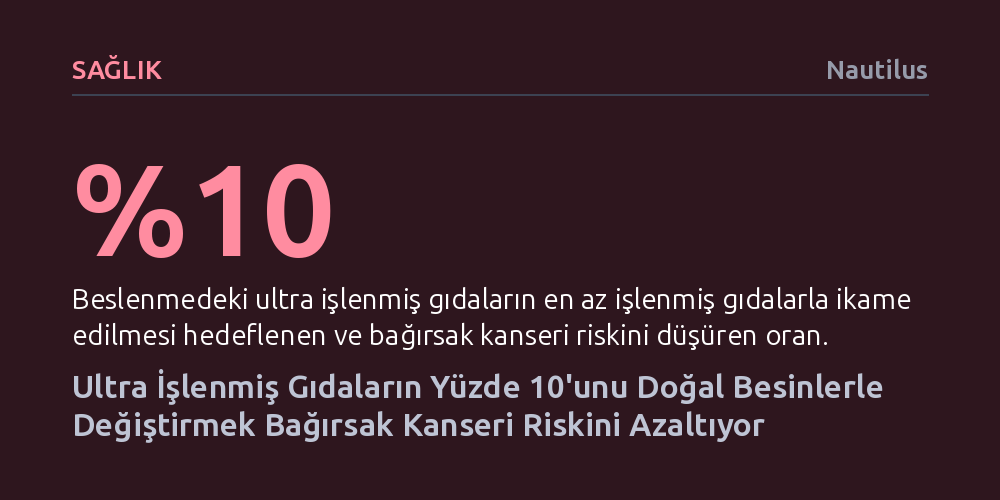

SAGLIK · Nautilus · 2026-10-18
Ultra işlenmiş gıdaların yalnızca yüzde 10'unu doğal besinlerle değiştirmek bağırsak kanseri riskini yüzde 2 oranında azaltıyor. Araştırma, tüm hazır gıdaların aynı olmadığını; işlenmiş etlerin riski yükselttiğini, lif ve tam tahıl içerenlerin ise koruyucu olabildiğini gösteriyor.
Paketli ve işlenmiş tüm gıdaları toptan zararlı saymak yerine, asıl riskin gıdanın ne kadar işlendiğinde değil, içinde hangi besin ögelerini barındırdığında yattığını gösterir.

Günlük beslenmede yapılacak ufak bir düzeltmenin bağırsak kanseri üzerinde somut bir fark yaratabileceği ortaya kondu. ABD'de 460 binden fazla kişinin sağlık verilerini kapsayan geniş çaplı yeni bir analiz, beslenme düzenindeki ultra işlenmiş gıdaların sadece yüzde 10'luk bir diliminin taze veya az işlenmiş gıdalarla ikame edilmesinin, bağırsak kanseri görülme sıklığını yüzde 2 oranında düşürdüğünü gösteriyor. Bu ilk bakışta mütevazı bir düşüş gibi görünse de toplum genelindeki vaka sayıları göz önüne alındığında binlerce insanın hayatını doğrudan etkileyebilecek bir potansiyele işaret ediyor.
Çalışmanın en şaşırtıcı sonucu ise toplam ultra işlenmiş gıda tüketimi ile bağırsak kanseri arasında genel bir korelasyon bulunamamış olması. Yani paketli ürünleri daha çok tüketenlerin doğrudan daha yüksek kanser riskine maruz kaldığı yönündeki yaygın varsayım doğrulanmadı. Araştırmacılar, bu durumun ardındaki sırrın gıdanın sadece işlenme biçiminde değil, içerdiği temel besin ögelerinde yattığını belirtiyor.
Bu çarpıcı sonuçlara ulaşmak için araştırmacılar, 1995-1996 yıllarında başlatılan ve 50 ila 71 yaş aralığındaki bireyleri kapsayan Ulusal Sağlık Enstitüleri ve AARP Diyet ve Sağlık Çalışması'nın verilerini derinlemesine inceledi. Başlangıçta hiçbir kanser tanısı bulunmayan katılımcılar, demografik özelliklerinden fiziksel aktivitelerine, sigara ve alkol alışkanlıklarından günlük yemek porsiyonlarına kadar son derece kapsamlı anketlere tabi tutuldu. Yirmi yılı aşan takip süreci boyunca bu grupta 10 binden fazla bağırsak kanseri vakası kaydedildi.
Araştırma ekibi, katılımcıların tükettiği gıdaları değerlendirirken uluslararası alanda standart kabul edilen Nova sınıflandırma sisteminden yararlandı. Bu sistem yiyecekleri dört temel gruba ayırıyor: İlki taze meyve, sebze, yumurta ve çiğ et gibi hiç işlenmemiş ya da minimum düzeyde işlem görmüş gıdalar. İkinci grupta yağ ve şeker gibi mutfak bileşenleri yer alırken, üçüncü grup bunların birleşiminden oluşan ev yapımı ekmek veya konserve gibi geleneksel işlenmiş ürünleri kapsıyor. Dördüncü grup ise ev mutfaklarında bulunmayan endüstriyel katkılarla, kıvam artırıcılarla ve sentetik bileşenlerle üretilen ultra işlenmiş gıdalardan oluşuyor. İnceleme, başlangıçtaki beslenme anketlerinin bu dördüncü grubu gerçeğe çok yakın bir doğrulukla tespit ettiğini doğruladı.
Analiz sonuçları, tüm ultra işlenmiş gıdaları aynı sepete koymanın büyük bir yanılgı yarattığını açıkça gösteriyor. Zira ultra işlenmiş sınıfa giren gıdalar arasında tam tahıl, lif, süt ürünleri ve kalsiyum bakımından zengin olanların tüketimi bağırsak kanseri riskini düşürüyor. Buna karşılık, aynı kategoride yer alan sosis, salam gibi işlenmiş etlerin tüketimi kanser riskini belirgin biçimde artırıyor. Dolayısıyla bir gıdanın endüstriyel banttan çıkmış olması, onun kesinlikle kanserojen olduğu anlamına gelmiyor; gıdanın lif ve kalsiyum taşıyıp taşımadığı riski tamamen zıt yönlere çevirebiliyor.
Bu sebeple uzmanlar, politika yapıcıların ve bilim insanlarının tüm ultra işlenmiş gıdaları tek bir başlık altında toplamasının yanıltıcı olacağını vurguluyor. Araştırma ekibinin belirttiği gibi, 'ultra işlenmiş' etiketi tek başına bağırsak kanseri riskini açıklamaya yetmiyor; gıdanın ne ihtiva ettiği belirleyici faktör olarak öne çıkıyor. Bu durum, mevcut kanser önleme rehberlerinin neden işlenmiş kırmızı et tüketimini kısıtlarken lifli ve tam tahıllı ürünleri ısrarla tavsiye ettiğini bir kez daha teyit ediyor.
Elde edilen bulgular beslenme politikaları açısından önemli ipuçları sunsa da araştırmanın sınırlarını göz ardı etmemek gerekiyor. Çalışma geniş katılımcı sayısına ve yirmi yılı aşkın gözlem süresine dayanmasına rağmen temelinde anket yöntemine dayanan gözlemsel bir araştırma niteliğinde. Katılımcıların geçmişe dönük beslenme beyanları her zaman kusursuz bir kesinlik taşımayabiliyor ve istatistiksel modeller fiziksel aktivite veya sigara gibi faktörleri hesaba katsa da biyolojik sebep-sonuç ilişkisini tek başına kanıtlayamıyor.
Yine de çalışmanın vardığı pratik sonuç, karmaşık beslenme tartışmalarının ötesinde sade bir gerçeğe işaret ediyor: Hazır ve aşırı işlenmiş gıdaların yerine pazar tezgâhından gelen taze sebzeleri, meyveleri ve tam tahılları koymak, hatta bu dönüşümü diyetin sadece onda birinde bile başarmak bağırsak sağlığını korumada ölçülebilir bir kazanım sağlıyor.